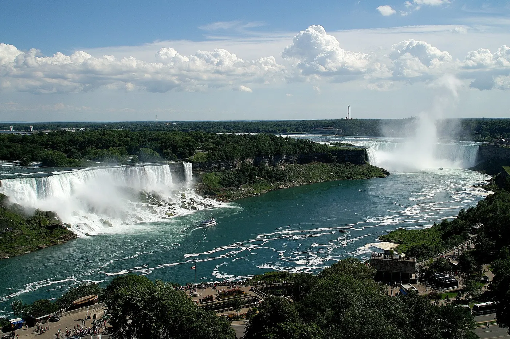

Niagara Falls from New York
The one trip on this list that cannot be done in a day. Nine hours by train, once daily, or a flight and a drive — and two nights at the falls to make the journey worthwhile.
Checked 2 November 2026. Prices, opening hours and transport details were verified against official sources. Things change — confirm before you book. How we check.
This is not a day trip
Niagara Falls is about nine hours from New York by train, and the train runs once a day. That single fact decides the whole trip: you go for a night or two, or you go by organised bus tour and spend a very long day on the road.
The Maple Leaf is a slow, scenic ride up the Hudson Valley and across upstate New York, and it leaves once daily. Flying to Buffalo takes about an hour and a half plus a 40-minute drive, but adds two airports and a car at the other end.
Once there, the falls are the attraction. The American side puts you at Prospect Point and the state park; the Canadian side has the classic wide view and the town of Niagara-on-the-Lake, and both are worth half a day. Two nights work best: one to travel and see the falls at dusk, one full day for the boat and the cave walkways, and a final morning for the Canadian side before the train back.
Getting there: train, plane or bus tour
The train is simplest and slowest; flying is faster but adds transfers. The bus tour is the only way to see the falls without staying a night.
| Option | Journey time | Approx. round trip | Notes |
|---|---|---|---|
| Amtrak Maple Leaf | about 9 h, once daily | $140–$300 | Direct from Penn Station, once a day. Long but scenic along the Hudson and through upstate New York; the cheapest fares go first. |
| Flight to Buffalo + drive | 1 h 30 plus a 40-minute drive | check current fares | Much faster in the air, but add airport time at both ends plus a car or transfer from Buffalo. Check current fares and schedules before booking. |
| Organised bus tour | 07:00–midnight | about $150–$200 | A single very long day from Manhattan, usually with the falls and some free time included. Check what the tour covers before you compare it with a night in a hotel. |
Journey times and fares are approximate and were checked in November 2026. The Maple Leaf runs once daily and Amtrak pricing is dynamic — check current fares and schedules before booking.
What the trip is really about
The falls are the reason for the journey. Everything else on this list is what to do with the rest of the day.
Niagara Falls State Park and Prospect Point
The American side's state park puts you at the edge of the American Falls, close enough to feel the spray. Go early or near dusk.
Maid of the Mist
The boat that takes you to the base of the falls, April to November. You will get wet; that is the point. Book a morning departure.
Cave of the Winds
Wooden walkways and decks at the foot of Bridal Veil Falls, with the Hurricane Deck close enough to be genuinely bracing. Seasonal, like the boat.
Niagara-on-the-Lake
A handsome lakeside town of shops, restaurants and theatres about half an hour from the falls. The calm counterpoint to the spray — passport required.
The Canadian side at Table Rock
The classic Horseshoe Falls photograph, looking back along the curve of the falls. Worth crossing for.
A realistic Niagara overnight
Two nights, one full day at the falls. Times are indicative — check the once-daily train schedule before you commit.
-
Day 1, morning — The Maple Leaf from Penn Station
The daily train north, up the Hudson and across upstate New York. Bring food and something to read.
-
Day 1, late afternoon — Arrive and check in
Stay within walking distance of the falls if you can. Drop the bags and go straight out.
-
Day 1, dusk — First view from Prospect Point
Walk to the edge of the American Falls as the light goes. It is the best possible introduction and costs nothing beyond the walk.
-
Day 2, morning — Maid of the Mist
First or second departure, before the coach groups arrive. Ponchos are provided and largely symbolic.
-
Day 2, midday — Cave of the Winds
The walkways below Bridal Veil Falls. Allow an hour, and expect to be soaked in a way that photographs cannot convey.
-
Day 2, afternoon — The Canadian side or Niagara-on-the-Lake
Cross for the classic view at Table Rock and dinner in Niagara-on-the-Lake, then take a morning train home the next day.
Other trips
If nine hours on a train is too much, these are the trips that fit a shorter journey.
Boston
The Freedom Trail, Beacon Hill and the North End, four hours up the Northeast Corridor.
Philadelphia
Independence Hall, the Liberty Bell and Reading Terminal Market in a single easy day.
Hudson Valley
Dia Beacon, Storm King and the river villages, eighty minutes from Grand Central.
Day-trip questions
Can you visit Niagara Falls as a day trip from New York?
No. The train takes about nine hours each way and runs once a day. The organised bus tours do it in one long day, but you will spend most of it travelling.
Should I take the train or fly to Niagara Falls?
Fly if time matters: about an hour and a half to Buffalo plus a 40-minute drive. Take the train if you want the journey to be part of the trip. Check current fares and schedules for both.
Do I need a passport to see Niagara Falls?
Not for the American side. You do need one to cross into Canada, including to Niagara-on-the-Lake; check current entry requirements before travelling.
When is the best time to go to Niagara Falls?
Summer and early autumn. Maid of the Mist operates from April to November, and the cave walkways are seasonal too; check opening times before booking.